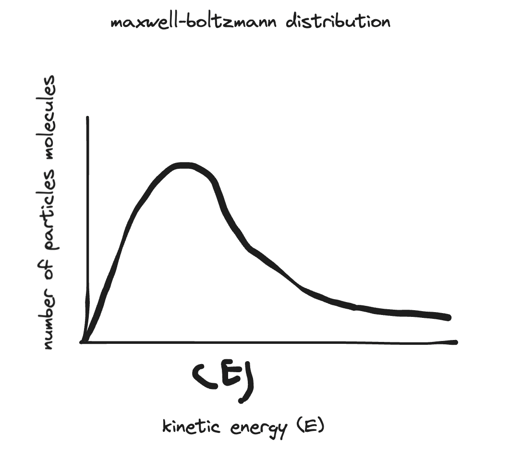
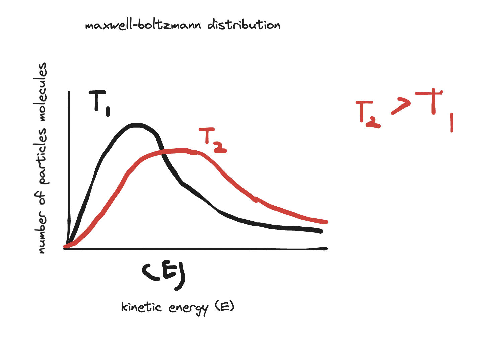
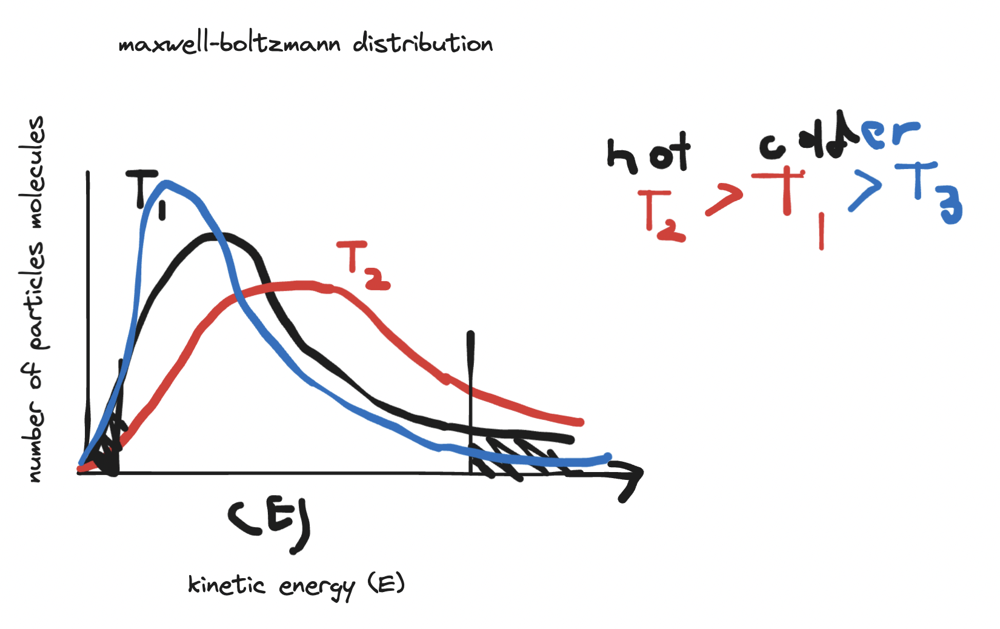
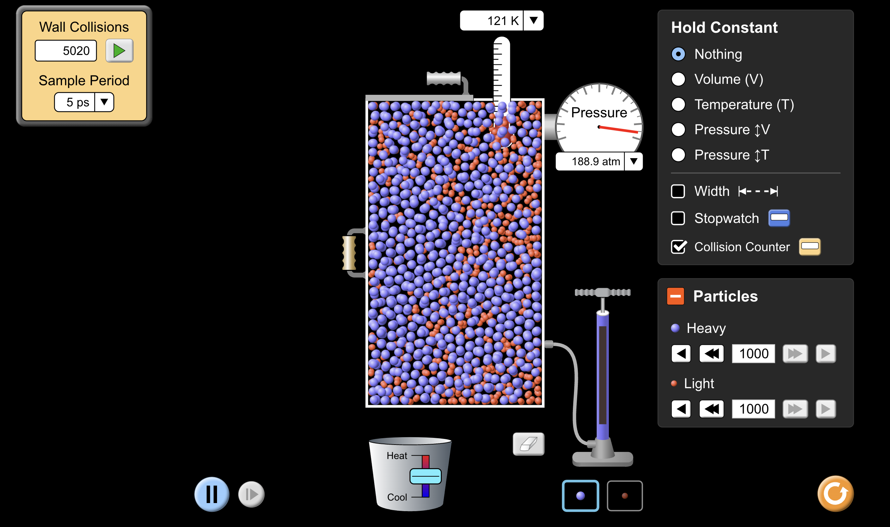
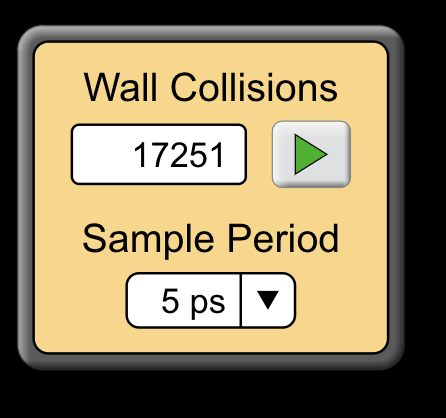

Crash Course Video Notes
- Gas is everywhere.
Boyle’s law.
- greatest scientific misattributions of all time.
- P V = k
- Volume / Temperature = Constant
The Ideal Gas Law
- P V = n R T
- Pressure = Newtons/Areas
- 1 ATM = ~100 kPA
- R = Universal Gas Constant.
- T = Temperature.
- Kinetic Energy, how fast/slow the average particle is moving.
- STP = Standard Temperature & Pressure.
- Absolute Zero is the temperature at 0 kelvins where all movement of all particles stopped.
- some other stuff I didn’t take down because he was talking very fast.
Powerpoint
Gas Pressure
- Gases consist of particles in constant random motion, spread a long way apart.
- When gases collide with the walls of their containers each collision exerts a force. This causes a pressure to be exerted on the walls of the container, that is, a force per unit area.
- TLDR: It is a force
- gases consist of particles in constant random motion, spread a long way apart.
- When gases collide with the walls of their container, each collision exerts a force. This causes a pressure to b exerted on the walls of the container, that is, a force per unit area.
- Pressure is measured in Pascals, 1 Pa = 1 N/
- We also measure pressure in atmospheres, where 1 atm = 101.3kPa
Kinetic Theory of Gases
- The kinetic theory of gases links the macroscopic behaviour of a gas with its microscopic behaviour.
- In macroscopic terms, a gas is a phase of matter that has a fixed mass and whose values is equal to the volume of its container. The gas exerts pressure on the walls of the container.
- In microscopic terms, a gas is a collection of many particles that collide with each other and the container walls.
- The kinetic theory relates the pressure exerted by a gas to the motion of its particles.
- The kinetic theory of gases was developed from experimental evidence to explain the similar behaviours of all gases.
- Mathematical relationships between pressure, volume, moles and temperature have been derived for an ideal gas, that is, a gas that obeys all the equations perfectly.
- There is no such thing as an ideal gas- no real gases behave exactly as the laws describe. However, under normal conditions, almost all gases follow the ideal gas model very closely.
- Real gases deviate most from ideal gas behaviour at very low temperatures and very high pressures.
- Gases with small particles like hydrogen and helium follow the ideal gas laws most closely.
- Since they have smaller particles, and less interactions between particles.
Ideal Gas Assumptions
- When describing an ideal gas, the following assumptions are made:
- the motion of all particles is random.
- all particles travel in straight lines.
- any forces of attractions (intermolecular, electrostatic, and gravitational forces) are negligible.
- all particles of the same gas are identical, and perfect spheres.
- the internal energy of the gas is entirely kinetic.
- all collisions between particles and the walls of the container are completely elastic (there is no loss of energy).
- particles take up negligible volume (pressure is due to mobility).
- newton’s law of motion apply (for every opposite action, there is an equal and opposite reaction etc).
Kinetic Energy and Temperature
- Important aspect of kinetic energy is that:
- temperature is related to average kinetic energy of the particles.
- however, there is a range of kinetic energy values for the particles at any particular temperature - some move faster and some move slower than average.
- maxwell-boltzmann distribution describes the distribution of kinetic energies of particles at a given temperature.
- y axis is number of particles molecules in a sample.
- x axis is the kinetic energy (E)

 
- Kinetic Energy & Particle Velocity
- KE = 1/2 mv^2 (we dont need to do calculations with the formula AT ALL)
- particle with greater mass will have a lower average velocity.
Measuring Temperature
- absolute or thermodynamic scale of temperature is a measure of the average kinetic energy of the particles. It is measured in degrees Kelvin (K). When the temperature is measured in Kelvin, the temperature of a substance is directly proportional to the average kinetic energy of its particles.
- Absolute temperature starts at absolute zero - the theoretical lowest possible temperature, at which points the particles would have no kinetic energy. The absolute scale has units of the same magnitude as the Celsius scale. Absolute zero cannot be reached.
- Converting to and from Kelvin and degrees Celsius:
Powerpoint 2: The Gas Laws
- HOW gases behave?
- how can it be predicted by The Kinetic Theory.
- Kinetic Theory states that ALL matter consists of tiny particles that are in constant (random) motion (movement)
Real vs Ideal Gases
Real Gases
- do have volume
- are attractions between particles
- can condense or solidify
Ideal Gases
- no volume
- no attraction between particles.
- follows gas laws at all temperatures & pressures.
Difference
- real gases differ most from ideal gas at low temps and high pressures
4 Descriptors of Gas
- Pressure
- Temperature
- Volume
- Number of particles
- these 4 things can completely describe a gas to measure 4 things.
Worksheet
- we did a worksheet on the ideal gas laws.
- brownian moton
- boyles law
- celcius and kelvin
- absolute zero
- pressure and temeprature
5020 wall collision/5ps  